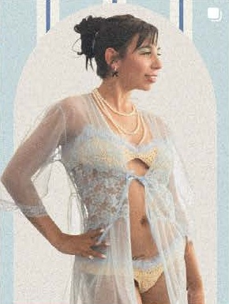

A LITTLE SWEET. A LITTLE SUBVERSIVE.
Made by hand.
Worn your
own way.
Crochet, sewn looks, and a point of view.
Welcome to the world of Banshe.

A whole mood.
01 / THE PORTFOLIO
Looks with
something to say.
From the first stitch to the final look.
A selection from Chloe’s world.
02 / THE SHOP
Your next
main character piece.
Handcrafted crochet & sewn looks.
Ask about available pieces or a custom version.
A selection of past work. Prices, sizing, ready-to-ship availability, and made-to-order options are confirmed directly with Chloe.
03 / WHO IS SHE?
Hi, I’m Chloe.
Clothes are
my language.
I’m a Salt Lake City designer and stylist, and Banshe is my world of handcrafted crochet, sewn looks, and personal expression.
Explore the pieces, find your own way to wear them, or let’s dream up something together.
A little more of my world ↗04 / LET’S MAKE SOMETHING
Got a vision?
Let’s dress it.
Custom crochet. Sewn pieces. Styling.
Creative collaborations. Your idea starts here.
- 01 Tell me what you’re imagining.
- 02 We’ll discuss the details, fit, and timeline.
- 03 Make it yours.